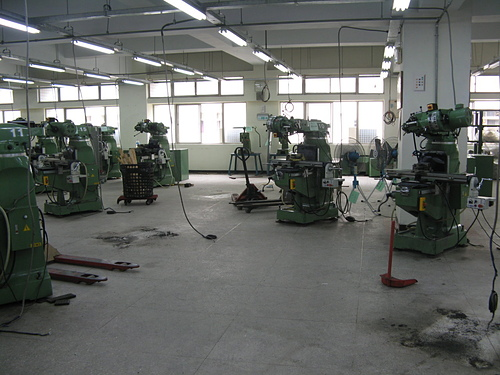

泰山職訓局
創業入門班： 提供創業適性評量，協助未創業者瞭解自身創業條件、評估創業風險，輔以政府創業資源介紹，安排每場次3小時之課程。
創業進階班： 以強化創業能力提供完整詳細實務規劃課程為目的，除提供財務、管理、行銷等專業知能外，以隨班「創業導師制度」輔以小組諮詢輔導，著重創業貸款計畫書演練，協助學員儘速完成申貸，安排每場次3天共18小時之課程。
創業精進班： 以精進創業者建立更清晰的創業輪廓，以熱門行業與產業趨勢為主題開設主題專班，安排每場次3小時之課程。
最新消息
徵才
